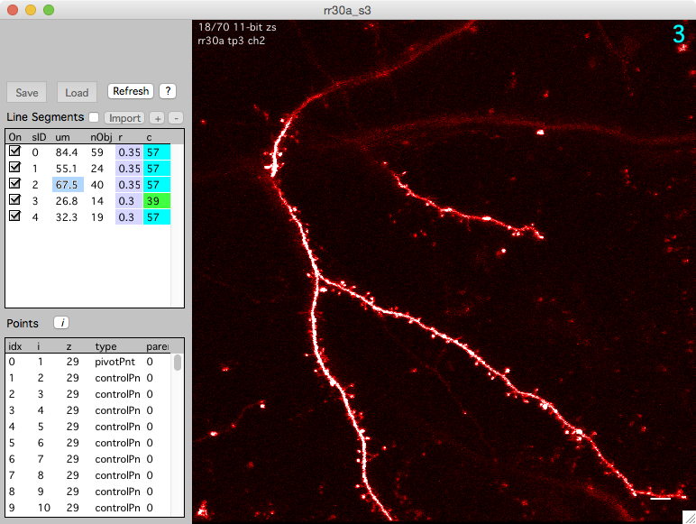

Reports
All reports will open a table of text that can be copy/pasted into another program for further analysis.
There are three types of reports: stack reports, segment reports, and map reports.
Stack Reports
Reports can be generated directly from each stack window.
Tip. Use keyboard '[' in any stack window to open and close the left stack db panel.
Line Segments
- Keyboard ‘e’ In the ‘Line Segments’ section of the main stack db panel to display a summary of each segment.
- Keyboard ‘E’ In the ‘Line Segments’ section of the main stack db panel to display the entire line (all 3D points)
Points (stack db)
- Keyboard ‘e’ In the ‘Points’ section of the main stack db panel to display the stack db as a table.
- Keyboard ‘i’ In the ‘Points’ section of the main stack db panel to display intensity analysis as a table.

Segment Reports
Segment Report
A segment report display statistics for each segment in a stack. It displays the length of the segment, the number and density of spines, the x/y/z position of the segment, and the number of each user spine type (e.g. mushroom, stubby, etc.). A segment report can be generated for individual stacks or a map.
To generate a segment report for each segment in a stack
- In a stack window, keyboard ‘o’ for output report.
- In the Stack Browser, select a stack in the list, keyboard ‘o’ for output report.
- In the Stack Browser, right click a stack in the list of stacks and select ‘Segment Report’.
- In the Stack Browser, right click a folder in the list folders (on the left) and select ‘Segment Report (All Stack)’.
The columns in a segment report are as follows
| Name | Meaning |
|---|---|
| numSpines | Total number of spines = goodSpines + badSpines |
| goodSpines | Number of good spines. |
| badSpines | Number of bad spines. |
| totalLen | (2D) Total segment length (um) |
| goodLen | (2D) Segment length (um) from most distal good spines. |
| totalDen | (2D) Total density of all spines = numSpines / totalLen |
| goodDen | (2D) Density of good spines = goodSpines / goodLen |
| totalLen3d | (3D) |
| goodLen3d | (3D) |
| totalDen3d | (3D) |
| goodDen3d | (3D) |
| zMin | |
| zMax | |
| zMean | |
| zMedian | |
| zAngle | |
| xyAngle | |
| tort | |
| xMin | |
| xMax | |
| xMean | |
| xMedian | |
| yMin | |
| yMax | |
| yMean | |
| yMedian | |
| nUnknown | Number of spines with userType ‘Unknown’ |
| nMushroom | Number of spines with userType ‘Mushroom’ |
| nFilapodia | Number of spines with userType ‘Filapodia’ |
| nLong | Number of spines with userType ‘Long’ |
| nStubby | Number of spines with userType ‘Stubby’ |
Map Reports
There are two types of map reports, Dynamics and Survival. Each report begins with a header that gives information about each session in the report
| Name | Meaning |
|---|---|
| Idx | Session Index |
| Map | Name of the map |
| sessCond | Session Condition |
| mapSegment | Map specific segment index (different from stackSegment) |
| Stack | Name of the stack (used internally) |
| originalFile | Original file name of the stack |
| stackSegment | Stack specific segment index (different from mapSegment) |
| date | The date the stack was acquired |
| time | The time the stack was acquired |
| seconds | The seconds the stack was acquired (from 12:00 AM on Jan 1, 1904) |
Dynamics Report
A dynamics report is used for a map. For each session in a map, it will calculate the length of each segment (um), the number of added and subtracted spines, the density of added and subtracted spines, etc. etc.
In any map plot, right-click and select ‘Dynamics Report’. If the map plot is displaying ‘All Segment’, a table for each segment will be opened. Otherwise, one table for the current ‘Map Segment ID’ will be opened.
The report is broken into different sections.
Information about the segment tracing
| Name | Meaning |
|---|---|
| totalLen2d | Total 2D length of tracing (um) |
| goodLen2d | 2D length of tracing between most distal ‘good’ objects (um) |
| smoothPoints | Boxcar smoothing for tracing z (0 means no smoothing) |
| totalLen3d | The smoothed total 3D length of tracing (um) |
| goodLen3d | The smoothed 3D length of tracing between most distal ‘good’ object (um) |
Information about all object (ignoring user type)
| Name | Meaning |
|---|---|
| density | density = nTotal / goodLen3d |
| nTotal | Total number of spines (is same as nGood + nBad) |
| nGood | Total number of good spines |
| nBad | Total number of bad spines |
| nAdd | Number of added spines. |
| nSub | Number of subtracted spines (at the current session) |
| nSub2 | Number of subtracted spines (from the previous session) |
| pAdd | Percent added = nAdd / nGood from previous session * 100 |
| pSub | Percent subtracted = nSub / nGood from previous session * 100 |
| pSub2 | |
| dAdd | Density added = nAdd / goodLen3d from previous session |
| dSub | Density subtracted = nSub / goodLen3d from previous session |
| dSub2 |
Information about user type 0
| Name | Meaning |
|---|---|
| density_ut0 | Density of user type 0 = nTotal_ut0 / googLen3d |
| nTotal_ut0 | Total number of user type 0 |
| nGood_ut0 | Total number of good user type 0 |
| nBad_ut0 | Total number of bad user type 0 |
| nAdd_ut0 | Number of added user type 0 |
| nSub_ut0 | Number of subtracted user type 0 |
| nSub2_ut0 | |
| pAdd_ut0 | Percent of added user type 0 = nAdd_ut0 / nGood_ut0 from previous session *100 |
| pSub_ut0 | Percent of subtracted user type 0 = nSub_ut2 / nGood_ut0 from previous session |
| pSub2_ut0 | |
| dAdd_ut0 | Density of added user type 0 = nAdd_ut0 / goodLen3d from previous session |
| dSub_ut0 | Density of subtracted user type 0 = nSub_ut0 / goodLen3d from previous session |
| dSub2_ut0 |
Information about user type 1, 2, 3, … 5
Other sections will be appended to the report to give information about ‘user type 1’, ‘user type 2’, ‘user type 3’, …, ‘user type 5’
Survival Report
A survival report calculates the number of objects remaining from an initial ‘seed’ session. Like a Dynamics report, it breaks down objects into different sections including all objects, followed by user type 0, followed by user type 1, etc. etc.
Information about all object (ignoring user type)
| Name | Meaning |
|---|---|
| surv_all_s0 | For each session, the number of surviving objects relative to seed session 0 |
| psurv_all_s0 | For each session, the fraction of surviving objects relative to seed session 0 |
| Note: This can continue with different seed sessions, for example, surv_all_s2 would give the number of surviving objects relative to seed session 2 |
Information about user type 0
| Name | Meaning |
|---|---|
| surv_type0_s0 | For each session, the number of surviving user type 0 objects relative to seed session 0 |
| psurv_type0_s0 | For each session, the fraction of surviving user type 0 objects relative to seed session 0 |
| Note: This can continue with different seed sessions, for example, surv_type0_s2 would give the number of surviving user type 0 objects relative to seed session 2 |
Information about user type 1
| Name | Meaning |
|---|---|
| surv_type1_s0 | For each session, the number of surviving user type 1 objects relative to seed session 0 |
| psurv_type1_s0 | For each session, the fraction of surviving user type 1 objects relative to seed session 0 |
Information about user type 2, 3, 4, 5
Other sections will be appended to the report to give information about ‘user type 2’, ‘user type 3’, ‘user type 4’ and ‘user type 5’